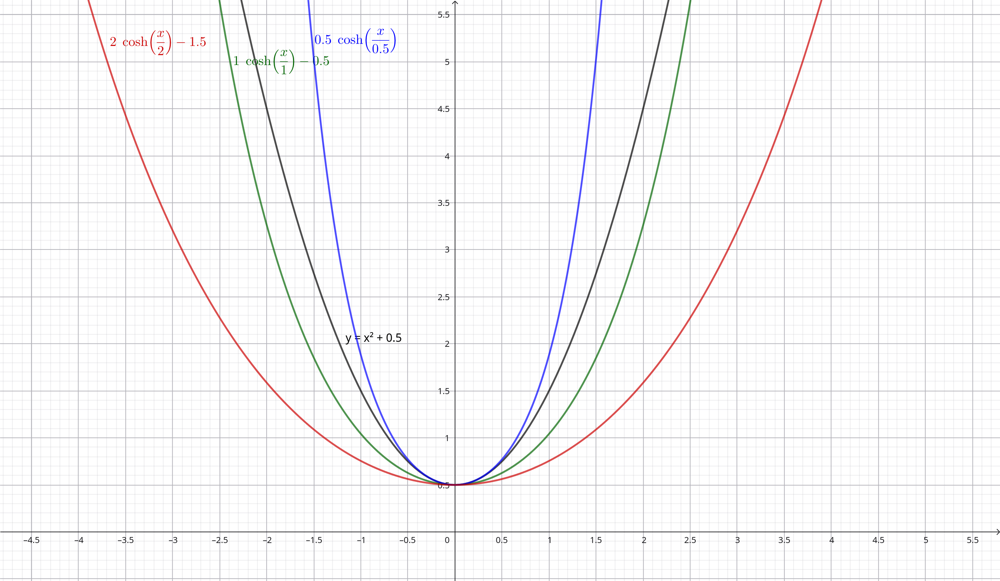

El problema del arco
Imagina que eres un arquitecto en el siglo X y has sido encargado de diseñar un arco para la bóveda de la iglesia de tu ciudad. Lo más probable es que la primera idea que se te venga a la cabeza sea un semicírculo. Pero como la vida es difícil en la era románica, se te requiere que la estructura sea lo más eficiente posible para ahorrar piedra de la cantera. Por lo que te planteas la siguiente pregunta: ¿Cuál es la geometría óptima para un arco que sujeta únicamente su propio peso?
Resulta que allá por 1691 los matemáticos Gottfried Leibniz, Christiaan Huygens y Johann Bernoulli dedujeron matemáticamente la ecuación que satisface una cadena o cuerda, suspendida por ambos extremos, en un campo gravitatorio uniforme. A esta curva ideal la llamaron catenaria, palabra proveniente del latín catenarius ‘propio de la cadena’.
La ecuación de la catenaria
Si queremos deducir la ecuación diferencial de la catenaria, simplemente tenemos que aplicar el equilibrio de fuerzas a una porción infinitesimal de una cadena o cuerda \( [s, s + \Delta s ]\). Dicho elemento está sometido a tres fuerzas: su peso y las tensiones con las que la cadena tira de sus extremos. Explícitamente:
donde \(\alpha\) es el ángulo formado por la catenaria y el eje horizontal, \(T\) es el módulo de la fuerza de tensión en cada punto y \(\rho\) es el peso por unidad de longitud.
Si hacemos tender \(\Delta s \to 0\), obtenemos que
La primera de las condiciones nos dice que la tensión horizontal es constante \(T_H\equiv T\text{cos}\alpha = cte\). Sustituyendo esta expresión en la segunda condición, obtenemos la ecuación para el ángulo que forma la catenaria y la horizontal:
Recordando la relación de la tangente \(\text{tan}\alpha = \frac{dy}{dx}\) y la longitud de arco \(ds=\sqrt{1+\left(\frac{dy}{dx}\right)^2}dx\), obtenemos la ecuación diferencial de la catenaria:
cuya solución viene dada por
En la solución anterior hemos agrupado las constantes \(a\equiv \frac{T_H}{\rho g}\) y establecido como punto de referencia \(\left(0,a\right)\). En la siguiente figura he representado tres diferentes catenarias y una parábola, para que podáis ver la diferencia entre estas curvas.

El arco catenario es tu mejor amigo
Bueno vale, todo esto está muy bien. Pero, ¿qué tiene que ver la catenaria con mi problema del arco? Pues resulta que si tomas una catenaria y la colocas boca abajo, formas un arco llamado arco catenario. Y, ¿a que no sabes qué? Es la curva que describe la geometría óptima de un arco que soporta su propio peso.
Si trazamos el recorrido que hacen las fuerzas dentro de un arco de piedra, veremos que la curva resultante es una caternaria invertida. Por tanto, podemos colocar nuestro material siguiendo esta forma sabiendo que no se caerá, empleando la cantidad óptima de piedra para tener un arco estable.
Esto ya lo descubrió el pobre Robert Hooke en el siglo XVII (digo pobre porque no se le hizo mucho caso), y se ha utilizado en numerosas ocasiones a lo largo de la historia.

Qué tienen en común Gaudí, una liana y el cable del tendido eléctrico
Ahora que sabes que son las catenarias y los arcos catenarios, no vas a dejar de verlos en todos lados. Por ejemplo, podemos encontrar catenarias en la naturaleza, como en las lianas y en las telas de araña, y también en los cables del tendido eléctrico, en la línea de cercanías Madrid-Aranjuez …


Los arcos catenarios han sido utilizados intuitivamente desde la antigüedad. Los encontramos en los iglúes, catedrales, bóvedas del antiguo Egipto… Mirad cómo en este monumento persa de muchísimos años de antigüedad, ¡prácticamente sólo permanece en pie el arco catenario!

Tenemos también numerosos ejemplos del uso del arco catenario en la arquitectura moderna, pero el mayor fan de este arco era el arquitecto Gaudí. Éste diseñaba sus edificios mediante maquetas colgantes hechas por hilos y pesos, que después daba la vuelta para diseñar sus edificios. Así, encontramos muchísimos arcos catenarios en la obra de Gaudí: en la Casa Milà, La Sagrada Familia, la Casa Batlló …
Os invito a que investigueis sobre el proceso de creación de Gaudí y más ejemplos del uso del arco catenario. Por ahora, podemos sentirnos satisfechos de haber resuelto el problema del arco óptimo. Nuestra iglesia no se caerá encima de nuestras cabezas. Ahora os planteo la siguiente pregunta: ¿Cuál es la geometría óptima para un arco que además de su propio peso sostiene un peso uniforme? Sabremos la respuesta en la próxima servilleta.

Comentarios
Enviar un comentario
¿Qué te ha parecido? Escríbenos tu comentario y lo revisaremos antes de publicarlo.